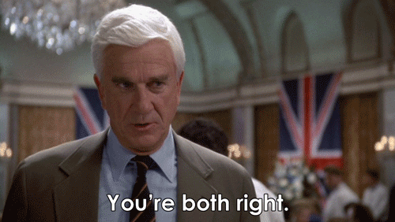
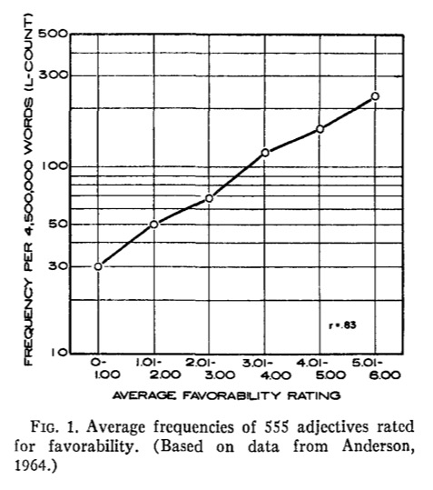
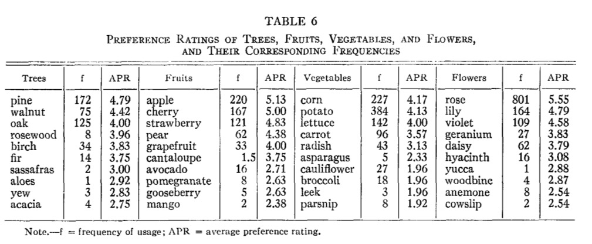
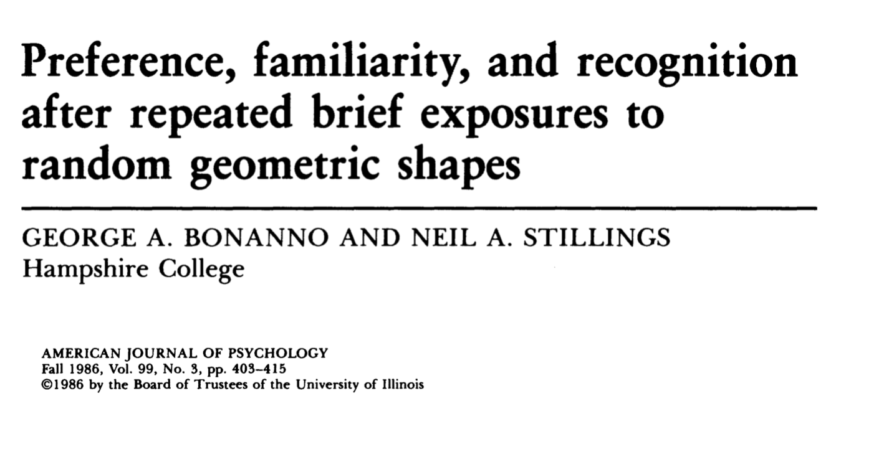

PSYC 2530: Implicit influences
and the mere exposure effect
Matthew J. C. Crump
Last compiled 04/01/22
Reminders from last class
There are no textbook chapter readings for this learning module.
All readings are pdfs available on blackboard.
This is the last learning module before midterm 2.
Implicit vs. Explicit Cognition
Cognitive psychology often distinguishes between implicit and explicit processes.
Implicit vs. Explicit Cognition
Here are some features commonly used to distinguish implicit from explicit processes
Implicit Processes
- Unaware
- Automatic
- fast, effortless
Explicit Processes
- Aware
- Controlled
- slow, effortful
- Strategic, rule-based
How is the distinction used?
- The implicit/explicit distinction is used to help describe and classify particular cognitive abilities.
- Claims about implicit vs. explicit processing are often debated.
- Researchers gather evidence to determine whether a particular cognitive phenomena/ability reflects implicit or explicit processing.
Implicit or explicit?
Consider whether this situation requires implicit or explicit processes?
A person listens to a song and says they like it.
Could be implicit
- automatically get a gut feeling about the song
- didn’t have to “think about it”
- can’t explain why they like it
Could be explicit
- person could have deliberately analyzed the song
- can provide reasons they like it
- their preference is based on their reasons
Implicit or explicit?
Consider whether this situation requires implicit or explicit processes?
A person makes the next move in a chess match
Could be implicit
- could be an expert
- lots of practice
- made the move without even thinking about it
Could be explicit
- person could have deliberated
- thought about the future moves
- made the move based on explicit reasoning process
Implicit and Explicit processes
Complex cognitive behavior/abilities can be a mixture of implicit and explicit processes

Implicit influences
This module will focus on the mere exposure effect as an example of an implicit influence in cognition.
There are many others, here is a short list:
Mere exposure effect
Repeated exposure to a stimulus enhances positive attitude toward the stimulus
- The more you see something, the more you will like it
- Familiarity breeds….liking
What is the evidence for the mere-exposure effect?
Preference of words depends on their frequencies
- Subjects shown antonym pairs
- Asked to choose more favorable word
- Choices were influenced by word-frequency
Favorability ratings depend on word frequency
- Anderson (1964) showed people adjectives
- Rate “how much would you would like the person described by this word?”

Ratings were influenced by word frequency (how often words appear in the language)
Preference ratings and frequency

Preference ratings and frequency

Experimental Evidence
- Johnson, Thomson, & Frincke (1960)
- phase 1: participants rate pleasantness of nonsense words
- phase 2: pronounce nonwords 1, 2, 5, or 10 times
- phase 3: Re-rate pleasantness of nonsense words

- scroll down for additional results
more results

Mere exposure and pictures

Mere exposure and pictures

Preference without recognition

Questions
- Can the mere-exposure effect occur even for “subliminal” stimuli?
- If people can’t recognize the repeated stimuli, will they still show a preference for them?
Method
- Phase 1: Participants viewed a RSVP sequence geometric shapes
- Phase 2:
- Recognition test: Which stimulus was shown before?
- Preference test: Which stimulus do you prefer?
Results
- Recognition performance is at chance
- People prefer the repeated item above chance
Timecourse of mere-exposure

Results

Explanations?
- We have reviewed some evidence that the mere-exposure effect occurs
- What does this tell us about cognition?
- What cognitive processes give rise to the mere-exposure effect?
Explanations?
- We have reviewed some evidence that the mere-exposure effect occurs
- What does this tell us about cognition?
- What cognitive processes give rise to the mere-exposure effect?
Processing debates
Researchers have proposed multiple theories to explain the mere-exposure effect
- We will evaluate some of them
- They are all tentative working hypotheses
- Ideally, the theory should be clear enough to make predictions that can be evaluated and measured.
Zajonc’s two system account
- Proposes two memory systems: regular and emotional
- Argues against the cognitive stage model (on right)
- The “emotion memory” system is very fast, and quickly extracts emotional information

Zajonc, R. B. (1980). Feeling and thinking: Preferences need no inferences. American psychologist, 35(2), 151. Chicago
Explaining results
- How does Zajonc’s two-system idea explain the pattern of results showing chance recognition performance, but above change preference for briefly presented shapes?
Familiarity vs. recollection
A different two-system account.
- Mere-exposure might reflect familiarity-based processing
Familiarity-based
- Relies on implicit knowledge
- Gut-feelings
- Feelings of fluency
Recollection-based
- Relies on explicit memories
- People can declare, the who, what, when, and where of memories
Fluency heuristic
- Some cognitive operations are experienced as easier or more fluent than others
- E.g., you might think you saw a word before because it is easy to read, and not because you saw it before
Is preference just familiarity?

Preference, Familiarity, and Recognition
- Method: People were shown geometric shapes very rapidly (just like previous study)
- Preference task: Which shape do you prefer?
- Recognition task: Which shape did you see before?
- Familiarity: Which shape feels more familiar?
Inference
- Stimuli are presented too briefly to support recollection
- Repeated items are “easier” to process
- The processing fluency associated with the repeated items is mistaken for a feeling of familiarity
- People have limited familiarity-based access to the briefly presented information
A Puzzle?
- Why don’t people use their feeling of familiarity when they are asked to recognize which item they saw?
Quote 1

Quote 2

Inferences
- Analytic mode can cause people to change how they use and evaluate sources of fluency
- Recognition task demands can prompt people to go into “analytic mode”, and search for “evidence” they saw the stimulus
- Preference judgment tasks encourage people to use “non-analytic mode” and rely on general feelings
- Mere-exposure effects do not require different kinds of memory systems
- Results reflect how task demands encourage people to rely on different sources of evidence while making decisions
What’s next
Take the quiz and complete any additional assignments
Next week is midterm 2